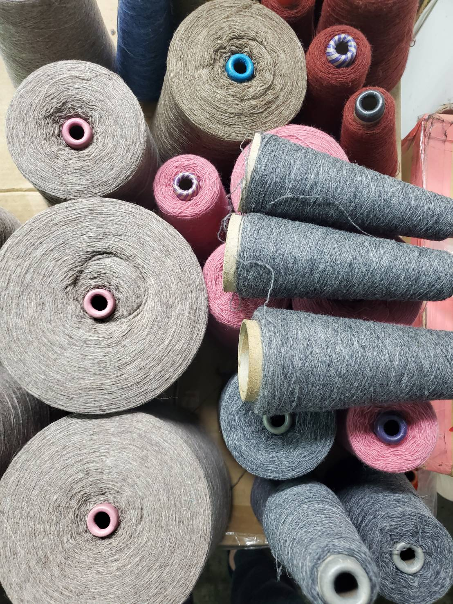
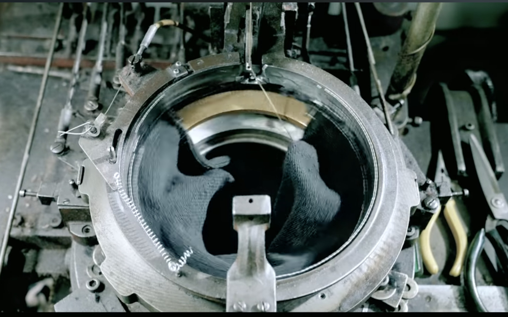
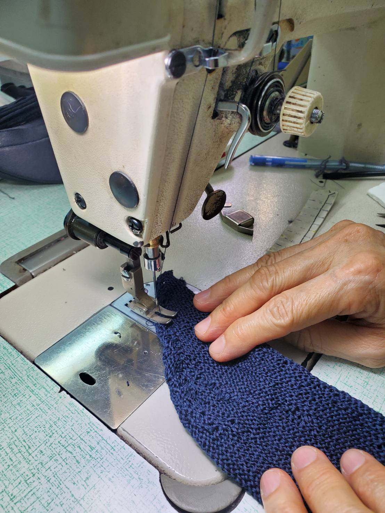
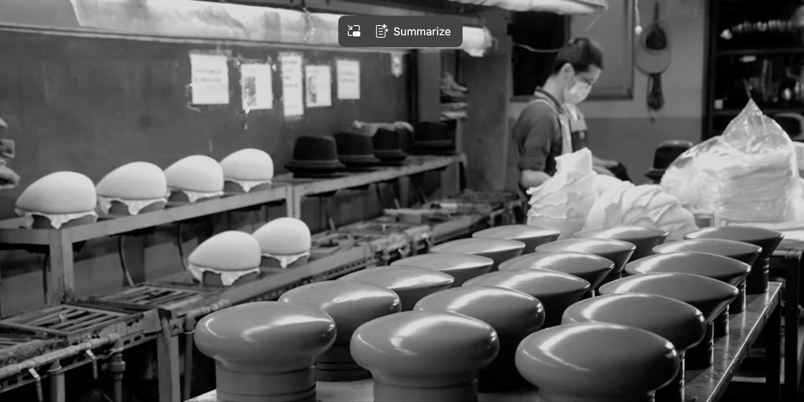
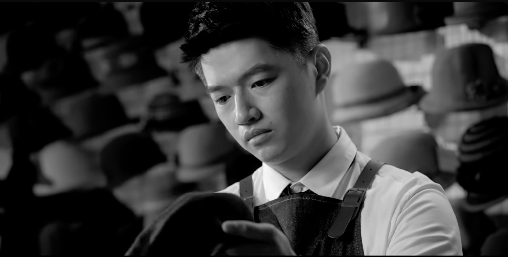

五大核心步驟，把設計輪廓做成結構化、可量產的帽款

依帽款的季節線與手感需求，選配天然亞麻、精梳棉、澳洲羊毛或機能彈性混紡等特種紗線，從源頭決定帽子的性格與舒適度。

帽冠一次織造成型，告別傳統裁片接縫。無縫結構讓帽體服貼頭型、透氣度高，也減少織造過程的耗損與重工。

仿皮滾邊強化帽簷挺拔度與耐磨性，異材質手工車縫處理邊緣細節，讓每一頂帽子在近看時依然經得起檢驗。

招牌熱定型加工為帽體建立形狀記憶：水滴折痕、微澎弧度、彎弧帽簷都能長久維持立體輪廓，抗壓不易變形。

逐批檢查針距、弧度與細節加工，確認洗標與安全規範後完成包裝出貨，交付可直接陳列銷售的成品品質。